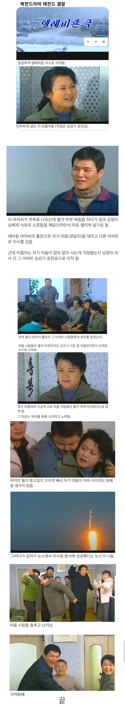

북한드라마 레전드 결말.
댓글
뭐? 북한으로 이적해서 남편한테 대들고 싶다고?


南편에 대든다 하셨나요?
요즘 주애한테 승계작업한다고 남자 전업주부 시키는 드라마도 만든다더라
내가 들은게 맞다면 이직은 공식적으론 안되지만 그냥 뇌물주면 일터 옮겨주는 식이고, 여권 관련해서는 주애 승계작업 이전엔 남자가 야 너 나랑 하자 하고 머리채잡고 끌고가면 따라야되는 수준. 당연히 대들면 개맞듯 맞는거고. 그래서 북한군은 여군 성폭행이 굉장히 빈번함
뭣 대를 만든다고?
아하 북한이 미사일을 쏘는 건 북한 주민들의 가족 갈등을 해결하려고 쏘는 거구나 난 또 돈 달라고 시위하는 줄 알았네
승강기 운전공 보고 저것도 옛날 드라마겠거니 했는데 아직도 있다고 하네

어쩐지 자주 쏘더라니 미사일이 이혼숙려캠프였구나
싸우면 매달아서 쏘나봄
설정은 재밌네 둘이 부부인지 모르고 계속 이어주려는게 ㅋㅋ
승강기운전공이면 엘레베이터걸임 아니면 승강기 엔지니어임?
승강기 운전하는거아님?
사람타면 몇층가세요? 하고 3층이요. 하면
도르레 졸라게 돌려서 3층으로 올리고. 다시 1층대기하고.
올라만 가는 아파트
북한 이직가능?.. 남편한테 대드는거 가능? ..